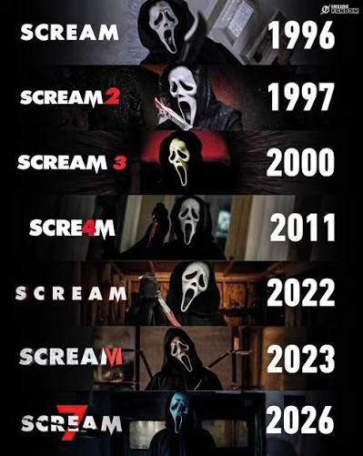

Scream es una de las sagas más conocidas del cine de terror, especialmente del subgénero slasher, en el que un asesino persigue y mata a sus víctimas, generalmente con un arma blanca. La historia comenzó en 1996 y se hizo famosa por combinar asesinatos, misterio, suspenso, humor negro y personajes que conocen las reglas típicas de las películas de terror.
ADVERTENCIA, el contenido que vas a ver contiene spoilers de toda la franquicia de SCREAM, desde sus inicios hasta el presente. Al mismo tiempo, hay descripciones violentas de las acciones que se cometen en las películas, se debe aclarar que todo lo que se va a leer es contenido FICTICIO, algún parecido con la realidad es pura coincidencia.

Interpreta a una periodista ambiciosa, directa y a veces egoísta, que busca noticias exclusivas sobre los asesinatos. Con el tiempo demuestra que también es valiente y que mantiene una relación importante con los supervivientes.
Es el rostro principal de la saga original. Su personaje pasa de ser una adolescente perseguida por Ghostface a convertirse en una superviviente fuerte, decidida y marcada por años de violencia. Su evolución es uno de los ejes emocionales de las películas.
Es el policía que intenta proteger a Woodsboro y a Sidney. Aunque a veces parece torpe o inseguro, es un personaje noble y perseverante. Su evolución muestra el desgaste que dejan los años enfrentándose a Ghostface.
Aunque distintos actores interpretan físicamente al asesino bajo la máscara, Roger L. Jackson es la voz característica que llama a las víctimas y las amenaza. Su tono inquietante es una de las marcas de identidad de la franquicia.
Se convierte en una de las protagonistas de la nueva etapa. Es una joven que intenta recuperar su vida después de los ataques y construir una identidad propia, más allá del miedo y la sobreprotección de su hermana.
Es la protagonista central de Scream (2022) y Scream VI. Su historia está marcada por secretos familiares y por el miedo a convertirse en alguien que no quiere ser.